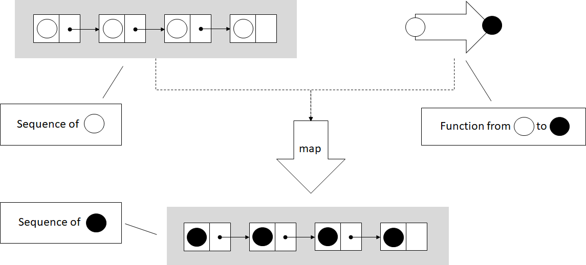
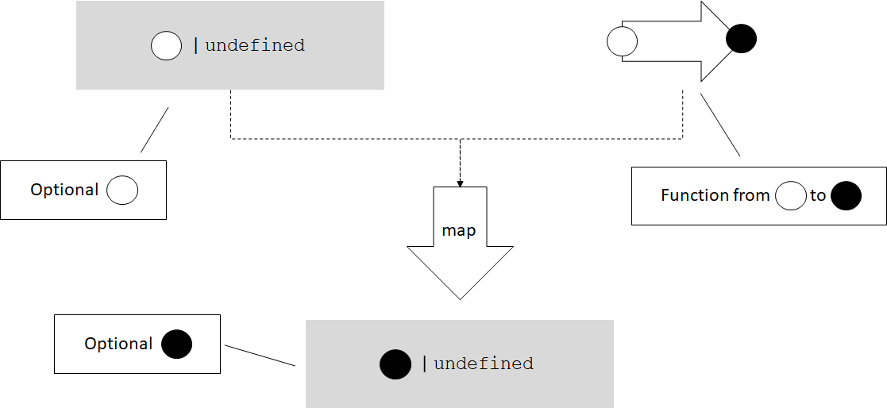
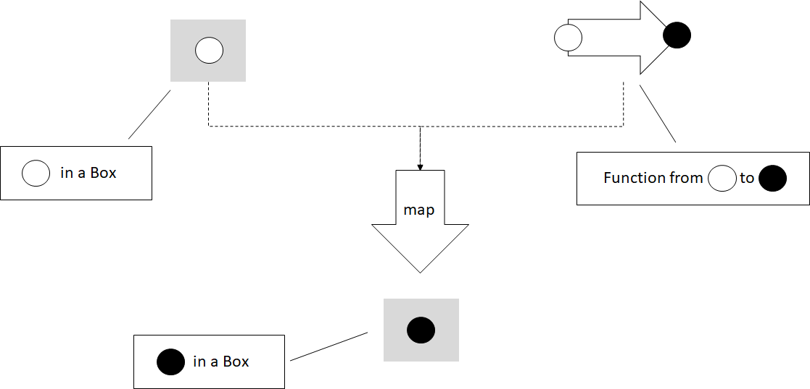
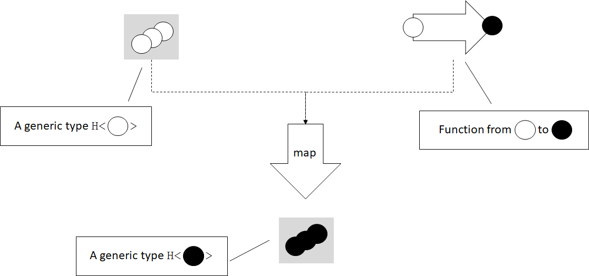
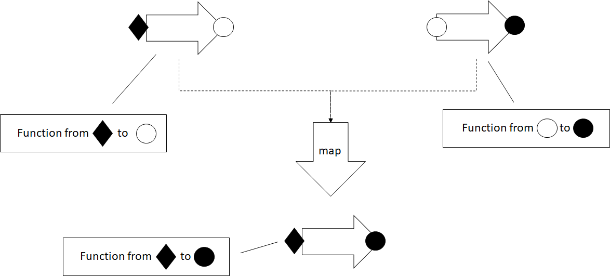

Higher Kinded Types: Functors
This blog post is an excerpt from my book, Programming with Types. The code samples are in TypeScript. If you enjoy the article, you can use the discount code vlri40 for a 40% discount on the book.
An Even More General Map
In the previous
post we saw
a generic map() implementation working on iterators. Iterators
abstract data structure traversal, so map() can apply a function to
elements in any data structure.

In the figure, map() takes an iterator over a sequence, in this case a
list of circles, and a function which transforms a circle. map()
applies the function to each element in the sequence, and produces a new
sequence with the transformed elements.
function* map<T, U>(
iter: Iterable<T>,
func: (item: T) => U): IterableIterator<U> {
for (const value of iter) {
yield func(value);
}
}
This implementation works on iterators, but we should be able to apply a
function of the form (item: T) => U to other types too. Let's take,
as an example, an Optional<T> type:
class Optional<T> {
private value: T | undefined;
private assigned: boolean;
constructor(value?: T) {
if (value) {
this.value = value;
this.assigned = true;
} else {
this.value = undefined;
this.assigned = false;
}
}
hasValue(): boolean {
return this.assigned;
}
getValue(): T {
if (!this.assigned) throw Error();
return <T>this.value;
}
}
It feels natural to be able to map a function (value: T) => U over an
Optional<T>. If the optional contains a value of type T, mapping the
function over it should return an Optional<U> containing the result of
applying the function. On the other hand, if the optional doesn't
contain a value, mapping would result in an empty Optional<U>.

Let's sketch out an implementation for this. We'll put this function
in a namespace. Since TypeScript doesn't support function overloading,
in order to have multiple functions with the same name, we need this so
the compiler can determine which function we are calling. Here's the
Optional<T> map() implementation:
namespace Optional {
export function map<T, U>(
optional: Optional<T>,
func: (value: T) => U): Optional<U> {
if (optional.hasValue()) {
return new Optional<U>(func(optional.getValue()));
} else {
return new Optional<U>();
}
}
}
export simply makes the function visible outside the namespace. If the
optional has a value, we extract it, pass it to func(), and use its
result to initialize an Optional<U>. If the optional is empty, we
create a new empty Optional<U>.
We can do something very similar with the TypeScript sum type T or
undefined. The Optional<T> we just saw is a DIY version of such a
type that works even in languages which don't support sum types
natively, but TypeScript does. Let's see how we can map over a
native
optional type T | undefined.
Mapping a function (value: T) => U over T | undefined should apply
the function and return its result if we have a value of type T, or
return undefined if we start with undefined:
namespace SumType {
export function map<T, U>(
value: T | undefined,
func: (value: T) => U): U | undefined {
if (value == undefined) {
return undefined;
} else {
return func(value);
}
}
}
These types can't be iterated over, but it still makes sense for a
map() function to exist for them. Let's define another simple generic
type, Box<T>. This type simply wraps a value of type T:
class Box<T> {
value: T;
constructor(value: T) {
this.value = value;
}
}
Can we map a function (value: T) => U over this type? We can. As you
might have guessed, map() for Box<T> would return a Box<U>: it
will take the value T out of Box<T>, apply the function to it, and
put the result back into a Box<U>.

namespace Box {
export function map<T, U>(
box: Box<T>,
func: (value: T) => U): Box<U> {
return new Box<U>(func(box.value));
}
}
There are many generic types over which we can map functions. Why is
this useful? It's useful because map(), just like iterators, provides
another way to decouple types which store data from functions which
operate on that data.
Processing Results or Propagating Errors
As a concrete example, let's take a couple of functions which process a
numerical value. We'll implement a simple square(), a function which
takes a number as an argument and returns its square. We'll also
implement stringify(), a function which takes a number as an argument
and returns its string representation:
function square(value: number): number {
return value ** 2;
}
function stringify(value: number): string {
return value.toString();
}
Now let's say we have a function readNumber(), which reads a numeric
value from a file. Since we are dealing with input, we might run into
some problems: what if the file doesn't exist or can't be opened? In
that case, readNumber() will return undefined. We won't look at the
implementation of this function, the important thing for our example is
its return type:
function readNumber(): number | undefined {
/* Implementation omitted */
}
If we want to read a number and process it by applying square() to it
first, then stringify(), we need to ensure we actually have a
numerical value as opposed to undefined. A possible implementation is
to convert from number | undefined to just number using if
statements wherever needed:
function process(): string | undefined {
let value: number | undefined = readNumber();
if (value == undefined) return undefined;
return stringify(square(value));
}
We have two functions that operate on numbers, but since our input can
also be undefined, we need to explicitly handle that case. This is not
particularly bad, but in general the less branching our code has, the
less complex it is. It is easier to understand, to maintain, and there
are less opportunities for bugs. Another way to look at this is that
process() itself simply propagates undefined, it doesn't do
anything useful with it. It would be better if we can keep process()
responsible for processing, and let someone else handle error cases. How
can we do this? With the map() we implemented for sum types:
namespace SumType {
export function map<T, U>(
value: T | undefined,
func: (value: T) => U): U | undefined {
if (value == undefined) {
return undefined;
} else {
return func(value);
}
}
}
function process(): string | undefined {
let value: number | undefined = readNumber();
let squaredValue = SumType.map(value, square);
return SumType.map(squaredValue, stringify);
}
Instead of explicitly checking for undefined, we call map() to apply
square() on the value. If it is undefined, map() will give us back
undefined. Just like with square(), we map() our stringify()
function on the squaredValue. If it is undefined, map() will
return undefined.
Now our process() implementation has no branching -- the
responsibility of unpacking number | undefined into a number and
checking for undefined is handled by map(). map() is generic and
can be used across many other types (like string | undefined) and in
many other processing functions.
In our case, since square() is guaranteed to return a number, we can
create a small lambda which chains square() and stringify(), and
pass that to map():
function process(): string | undefined {
let value: number | undefined = readNumber();
return SumType.map(value,
(value: number) => stringify(square(value)));
}
This is a functional implementation of process(), in which the error
propagation is delegated to map(). We'll talk more about error
handling in a later blog post, when we will discuss monads. For now,
let's look at another application of map().
Mix-and-match Function Application
Without the map() family of functions, if we have a square()
function which squares a number, we would have to implement some
additional logic to get a number from a number | undefined sum type.
Similarly, we would have to implement some additional logic to get a
value from a Box<number>, and package it back in a Box<number>:
function squareSumType(value: number | undefined)
: number | undefined {
if (value == undefined) return undefined;
return square(value);
}
function squareBox(box: Box<number>): Box<number> {
return new Box(square(box.value));
}
So far this isn't too bad. But what if we want something similar with
stringify()? We'll again end up writing two functions which look a
lot like the previous ones:
function stringifySumType(value: number | undefined)
: string | undefined {
if (value == undefined) return undefined;
return stringify(value);
}
function stringifyBox(box: Box<number>): Box<string> {
return new Box(stringify(box.value))
}
This starts to look like duplicate code, which is never good. If we have
map() functions available for number | undefined and Box, they
provide the abstraction to remove the duplicate code. We can pass either
square() or stringify() to either SumType.map() or to Box.map(),
no additional code needed:
let x: number | undefined = 1;
let y: Box<number> = new Box(42);
console.log(SumType.map(x, stringify));
console.log(Box.map(y, stringify));
console.log(SumType.map(x, square));
console.log(Box.map(y, square));
Now let's define this family of map() functions.
Functors and Higher Kinded Types
What we just talked about in this section are functors.
A functor is a generalization of functions that perform mapping
operations. For any generic type like Box<T>, a map() operation
which takes a Box<T> and a function from T to U and produces a
Box<U> is a functor.

In the figure we have a generic type H which contains 0, 1, or more
values of some type T, and a function from T to U. In this case
T is an empty circle and U is a full circle. The map() functor
unpacks the T or Ts from the H<T> instance, applies the function,
then places the result back into an H<U>.
Functors are extremely powerful concepts, but most mainstream languages do not have a good way to express them. That's because the general definition of a functor relies on higher kinded types.
A generic type is a type which has a type parameter, for example a
generic type T, or a type like Box<T>, have a type parameter T. A
higher kinded type, just like a higher-order function, represents a type
parameter with another type parameter. For example, T<U> or
Box<T<U>>, have a type parameter T which, in turn, has a type
parameter U.
Since we don't have a good way to express higher kinded types in TypeScript, C#, or Java, we can't define a construct using the type system to express a functor. Languages like Haskell and Idris, with more powerful type systems, make these definitions possible. In our case though, since we can't enforce this capability through the type system, we can think of it more as a pattern.
We can say a functor is any type H with a type parameter T (H<T>)
for which we have a function map() which takes an argument of type
H<T>, and a function from T to U, and returns a value of type
H<U>.
Alternately, if we want to be more object-oriented, we can make map()
a member function and say H<T> is a functor if it has a method map()
which takes a function from T to U and returns a value of type
H<U>.
To see exactly where the type system is lacking, we can try to sketch
out an interface for it. Let's call this interface Functor and have
it declare map():
interface Functor<T> {
map<U>(func: (value: T) => U): Functor<U>;
}
We can update Box<T> to implement this interface:
class Box<T> implements Functor<T> {
value: T;
constructor(value: T) {
this.value = value;
}
map<U>(func: (value: T) => U): Box<U> {
return new Box(func(this.value));
}
}
This code compiles, the only problem is that it isn't specific enough.
Calling map() on Box<T> returns an instance of type Box<U>. But if
we work with Functor interfaces, we see that the map() declaration
specifies it returns a Functor<U>, not a Box<U>. This isn't
specific enough. We need a way to specify, when we declare the
interface, exactly what the return type of map() will be (in this case
Box<U>).
We would like to be able to say this interface will be implemented by
a type
. The following code shows how this
declaration would look like if TypeScript supported higher kinded types.
It obviously doesn't compile:H with a type argument T
interface Functor<H<T>> {
map<U>(func: (value: T) => U): H<U>;
}
class Box<T> implements Functor<Box<T>> {
value: T;
constructor(value: T) {
this.value = value;
}
map<U>(func: (value: T) => U): Box<U> {
return new Box(func(this.value));
}
}
Lacking this, let's just think of our map() implementations as a
pattern for applying functions to generic types, or values in some
box
.
Functors for Functions
Note that we also have functors over functions. Given a function with
any number of arguments that returns a value of type T, we can map a
function which takes a T and produces a U over it, and end up with a
function which takes the same inputs as the original function and
returns a value of type U. map() in this case is simply function
composition.

Mapping a function over another function composes the two functions. The result is a function which takes the same arguments as the original function and returns a value of the second function's return type. The two functions need to be compatible -- the second function must expect an argument of the same type as the one returned by the original function.
As an example, let's take a function which takes two arguments of type
T, and produces a value of type T and implement its corresponding
map(). This will return a function which takes two arguments of type
T and returns a value of type U:
namespace Function {
export function map<T, U>(
f: (arg1: T, arg2: T) => T,
func: (value: T) => U): (arg1: T, arg2: T) => U {
return (arg1: T, arg2: T) => func(f(arg1, arg2));
}
}
map() takes a function (T, T) => T, and a function T => U to map
over it. It returns a lambda function (T, T) => U.
Let's map stringify() over a function add(), which takes two
numbers and returns their sum. The result is a function which takes two
numbers and returns a string, the stringified result of adding the two
numbers:
function add(x: number, y: number): number {
return x + y;
}
function stringify(value: number): string {
return value.toString();
}
const result: string = Function.map(add, stringify)(40, 2);
Summary
map()generalizes beyond iterators, to other generic types.- Functors encapsulate data
unboxing
, with applications in composition and error propagation. - With higher kinded types, we can express constructs like functors using generics which themselves have type parameters.